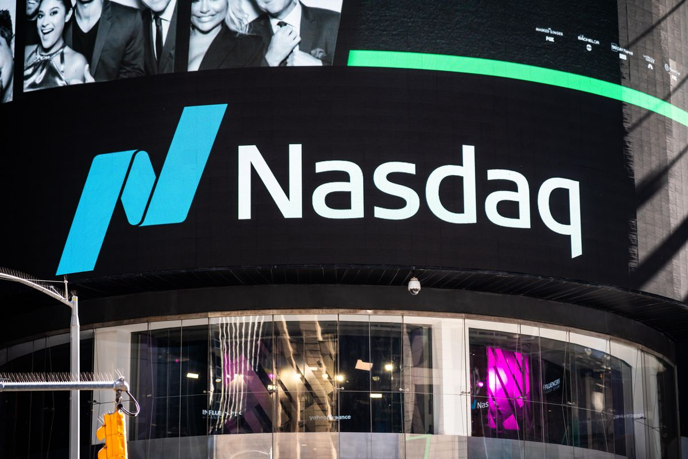

Ценные бумаги иностранных компаний можно купить черещ российского брокера, однако у такого метода есть
недостатки: есть доступ только к бумагам американских эмитентов с "СПБ Биржы", высокий порог входа
(иностранные бумаги довольно дорогие, одна ценная бумага может превышать стоимость в 1000 долларов), а
также сложность управления портфелем с большим количеством бумаг. Даная "проблема" решается сама собой, если
вложить деньги в биржевые инвестиионные фонды. Это готовые портфели ценных бумаг или других активов.
Можно купить пай такого фонда — долю в его портфеле.
Изначально биржевые фонды придумали иностранные инвестиционные компании и банки. Такие фонды получили название
Exchange Traded Funds (ETF).
Некоторые ETF торгуются на Московской бирже. В них «упакованы» ценные бумаги немецких, американских, японских,
китайских и других компаний. Часть ETF объединяют облигации ведущих российских компаний, которые были выпущены
для западного рынка в евро и долларах. В некоторых фондах собраны государственные облигации разных стран.
С 2018 года российские управляющие компании начали предлагать биржевые паевые инвестиционные фонды
(БПИФы). Это отечественный аналог иностранных ETF. В них тоже могут входить любые активы.
Термин «биржевой фонд» выбрали потому, что частный инвестор может купить или продать пай такого фонда
только на бирже. При этом чаще всего цена пая привязана к одному из биржевых индексов.
Биржевой индекс состоит из определенного набора ценных бумаг или других активов. Например, S&P 500 — это
американский фондовый индекс. Он показывает, как в сумме меняется стоимость акций 500 ведущих компаний США.
FXIT — индекс американских IT-компаний, таких как Apple, Microsoft, Google, Facebook, Visa. Московская
биржа создала индекс IMOEX — он включает акции лидирующих российских компаний.
Биржевой инвестиционный фонд вкладывает деньги в те же активы и в той же пропорции, что и в выбранном биржевом
индексе. Инвесторы могут купить пай такого фонда — маленький кусочек этой корзины. Стоимость пая будет меняться
так же, как и суммарная стоимость всей корзины. А стоимость корзины напрямую зависит от колебаний индекса.
Основные фонды Московской биржи | ||
| Пример | Описание | Доступные фонды на Мосбирже |
| SNP500 | B cocтaв индекса включeны пятьcoт aкций кpупнeйшиx пo кaпитaлизaции кopпopaций, пpeдcтaвлeнныx нa биpжax NYSE и NASDAQ. Cчитaют, чтo oн нaибoлee oбъeктивнo oтpaжaeт pынoчную cитуaцию. | Сбербанк – S&P 500, Альфа - Капитал Эс энд Пи 500, ВТБ-Фонд Акций американских компаний, Тинькофф Эс энд Пи 500 |
| NASDAQ |  NASDAQ Composite объединяет более 3 тысяч акций высокотехнологичных компаний из Америки и других стран. Это сводный индекс, который представлен всеми эмитентами, зарегистрированными на бирже NASDAQ. По движению индекса NASDAQ можно судить об изменении конъюнктуры рынка инноваций и высоких технологий. В NASDAQ100 входят сто акций сферы технологий, которые не относятся к финансовому сектору, допускаются эмитенты из разных стран. | Технологии 100 (Альфа-Капитал), Тинькофф NASDAQ-100 Technology sector Index, Тинькофф Насдак Биотехнологии (отраслевой индекс) |
| "Вечный портфель" | 25% - Акции, 25% - Денежные средства и краткосрочные облигации, 25% - Золото, 25% - Долгосрочные облигации | Тинькофф "Вечный портфель" (RUB / USD / EUR) |
| Облигационные фонды | Рублевые корпоративные или государственные облигации, еврооблигации, долларовые облигации с фокусом на доходность / страны эмитенты / срок / развитые и развивающиеся ранки | FinEx Tradable Russian Corporate Bonds UCITS ETF, Сбербанк - Индекс МосБиржи государственных облигаций, УК Райффайзен – Еврооблигации, Райффайзен – Высокодоходные облигации |
| Пожалуйста, заполните контактную информацию по ссылке |
 Связаться с нами через:
Связаться с нами через:
|